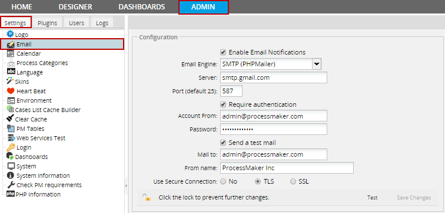
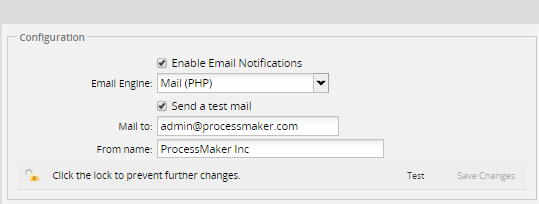
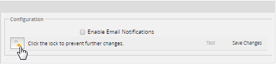
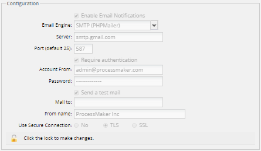
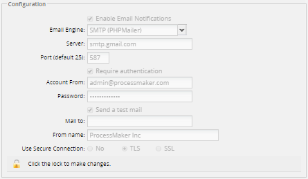
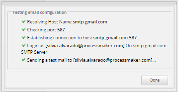
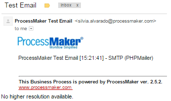

Overview
ProcessMaker can be configured to send out email to keep its users apprised of new cases in their Inbox and notify them at specified times while running cases. This page explains the settings to configure ProcessMaker to use an email server.
It's necessary to configure this email settings in order to use the following components.
- Tasks: To automatically email an user when assigned to a case.
- Events: Send Message Events, to email users at particular times during the course of a case.
- Conditional notification with the PMFSendMessage() function in a trigger.
- Case Notes: to send comments an information about cases.
Note: The email settings have been tested with Gmail, Yahoo and Hotmail services. It is not recommended to use Office 365, since it has not been tested and some configurations may not work properly.
Email Configuration
To allow ProcessMaker to send out email notifications, login to ProcessMaker with a user, such as the "admin" user, who has the PM_SETUP permission in his/her role.
Then, go to ADMIN > Settings > Email and check the Enable Email Notifications option and click on the lock figure to make changes.
First, define which email engine is used by ProcessMaker:
- Email Engine: Select the email engine which will be used to send out emails:
- 1. SMTP (PHPMailer)
- This option sends email using the PHPMailer program. Select this option to use an email server which supports the Simple Mail Transport Protocol (SMTP). If your organization does not have its own email server (such as sendmail, postfix, or exim), use an external email service (such as Gmail, Yahoo or Hotmail) which supports SMTP. If using an external email service, check the configuration information below for Hotmail, Yahoo or Gmail, or see this list for the SMTP configuration of other email providers.
- 2. Mail (PHP)
- Select this option to use PHP's mail() function to send the email via the Mail Transfer Agent (MTA), such as SendMail, Postfix or Exim, which is installed and configured on the same server where ProcessMaker is installed. Make sure that the php.ini file on the server is configured to use the MTA.
- If unable to deliver mail, check the sendmail_path setting. If using a Windows server, it may be necessary to change the SMTP and stmp_port settings.
- Note: SMTP (OpenMailer) which was an option in older versions of ProcessMaker is no longer recommended and has been removed.
SMTP (PHPMailer)
If using the SMTP (PHPMailer) option, then define the following fields:

- Server: The IP address or domain name for the email server. For example, "smtp.mail.yahoo.com" or "smtp.example.com".
- Port: The port number used by the email server. Generally port 25 is used, or alternatively port 587. If connecting to the email server with a SSL or TLS connection, generally port 465 is used. If left blank, the default port 25 will be used.
- Note: Make sure that that a firewall is not blocking this port on your ProcessMaker server.
- Require authentication: Check this option to enable authentication. When checked, the Password field is displayed.
- Account From: The name of the user account from which emails are sent. Some email servers, such as gmail, require that the account name include the full email address, such as:johndoe@gmail.com
- Password: The password for the user account.
- Send a test mail: Check this option to send a test mail. When checked, it displays the Mail to field.
- Mail to: The email account to which the test mail will be sent.
- From Name: Available on: ProcessMaker 2.5.2 on Set the name, from which emails are sent, such as "My Company Admin". If left blank, then emails will be sent from "ProcessMaker" by default.
- Use Secure Connection: Select whether the email requires a secure connection:
- No: Not a secure connection to the email server.
- SSL: Select if using Secure Sockets Layer to connect to the email server.
- TLS: Select if using Transport Layer Security to connect to the email server.
Mail (PHP)
If using Mail (PHP) option, no configuration information needs to be entered.

- Send a test mail: Check this option to send a test mail. When checked, it displays the Mail to field.
- Mail to: The email account to which the test mail will be sent.
- Use Secure Connection: Select whether the email requires a secure connection:
- No: Not a secure connection to the email server.
- SSL: Select if using Secure Sockets Layer to connect to the email server.
- TLS: Select if using Transport Layer Security to connect to the email server.
- Note: Since the Use Secure Connection option is required to be used only for SMTP connections, it was removed in version 2.0.42 and later.
- From Name: Available Version: From 2.5.2 on. Set the name, from which emails are sent, such as "My Company Admin". If left blank, then emails will be sent from "ProcessMaker" by default.
- Preventing changes in the configuration: Available Version: From 2.0.40 on. To change the email configuration, click the lock icon to unlock the configuration. Only users such as the admin, who have the PM_SETUPADVANCE permission in their role can change the email configuration.
- 
- Once it is configured, the information of the Email set up will appear only in view mode. If the configuration is unlocked, the fields will be able to be edited it and will show the lock open.
 

- If the admin user wants to make any changes to this information, he is able to do it by opening the lock:
- To save the changes, the user will have to close the lock again:
Testing the Email Configuration
After filling in the email settings, click on the Test button to test the email configuration.

If an error message in red appears, then try different settings and test again.

If the Send a test mail option was selected, an email should arrive from "Process Maker OS":

Once all the tests pass, click the Save Changes button to save the email configuration.
Email Configuration for Gmail
- Email Engine: SMTP (PHPMailer)
- Server: smtp.gmail.com
- Port: 465 or 587
- Require authentication:

- Account From: account_name@gmail.com or account_name@company_name.com
- Password: account_password
- Use Secure Connection: TLS
Sign in to Gmail. Note: In order to save a copy of outgoing emails in the Sent folder of a Gmail account, IMAP needs to be enabled:
- Click the gear icon in the top right.
- Select Settings.
?
- Click Forwarding and POP/IMAP.
- Select Enable IMAP.
- Click Save Changes.
Note: If there is a problem connecting with your gmail account, you probably need to Allow the access to your Google account by accessing this link in the same browser where you have your account session logged in.
Note: If using a 2-Step Verification, the ProcessMaker connection can't be performed correctly.
Email Configuration for Yahoo!
- Email Engine: SMTP (PHPMailer)
- Server: smtp.mail.yahoo.com
- Port: 587
- Require authentication:
- Sender Account: account_name@yahoo.com
- Password: account_password
- Use Secure Connection: TLS
Note: Yahoo limits accounts to 500 emails per day and emails can only be addressed to a maximum of 100 recipients.
Email Configuration for HotMail
- Email Engine: SMTP (PHPMailer)
- Server: smtp.live.com
- Port: 25 or 587
- Require authentication:
- Account From: account_name@hotmail.com
- Password: account_password
- Use Secure Connection: TLS
- Note: Hotmail accounts are limited to a maximum of 300 messages per day and up to 100 recipients per message.
Email Configuration for Outlook
Settings for Outlook accounts:
- Email Engine: SMTP (PHPMailer)
- Server: smtp-mail.outlook.com
- Port: 25 or 587
- Require authentication:
- Account From: account_name@hotmail.com
- Password: account_password
- Use Secure Connection: TLS
Checking the Email Configuration
To make sure that ProcessMaker is properly configured to connect to an email server, go to ADMIN > Settings > Email and send a test email. If ProcessMaker is unable to connect to the email server, check the address, port number and firewall.
Check the Address
If the test email fails, then first verify that the ProcessMaker server can address the email server. Go to the command line of the ProcessMaker server and issue a ping. (Use CTL+C to stop the pings.)
For example:
Note: Some systems may block the IMCP packets used by ping, so the email server may be operating even if the ping fails.
Check the Ports
Then, check which ports are being used by the email server with a tool such as Nmap which shows which ports are being used.
For example, to check which ports are used by smtp.mail.yahoo.com:
In this case, smtp.mail.yahoo.com is using port 25 for email and port 465 for email with a secure connection.
To check which ports are being used by the local machine, use netstat -tanp in Linux/UNIX or netstat -anb in Windows.
For example, to figure out which port is being used by the EXIM mail server on the local machine:
Check the Firewall
If the test email fails, then make sure that no firewall is blocking the port used by the email server.
Linux/UNIX:
To see which ports are open, use the netstat command as shown above. To check the status of iptables, use the command: iptables -L -n -v
For example, the following output indicates that iptables isn't configured, so no traffic should be blocked:
Windows:
To see which ports are open, use the netstat command as shown above.
To check the status of the Windows firewall:
- In Windows XP/2003/Vista, use the command: netsh firewall show state
- In Windows 7/2008, use the command: netsh advfirewall firewall